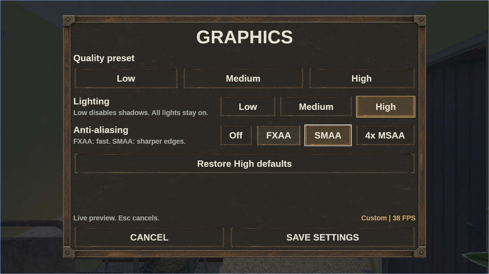

Render-resolution and texture controls are removed, together with their scaling camera, resized render target and texture work queue. Every preset uses the full window resolution and original textures. Old saves migrate lighting and anti-aliasing only.
Available modes: Off, FXAA, SMAA (High), and 4× MSAA. High remains the default. Medium now uses FXAA. Live preview, Save and Cancel remain available.

Chromium on Intel Iris Xe. GPU pass instrumentation confirms that FXAA and all three SMAA passes run only when selected. The same menu-heading crop is pixel-identical through seven mode switches. Ten Rust tests passed.
| Mode | Scene render target | MSAA samples |
|---|---|---|
| off | 1600 × 900 | 1 |
| fxaa | 1600 × 900 | 1 |
| smaa | 1600 × 900 | 1 |
| msaa4 | 1600 × 900 | 4 |
Raw browser evidence · Small-window keyboard check
No new FPS benchmark was collected. Earlier reduced-resolution preset measurements do not apply to these presets. Other GPUs, browsers and native execution were not checked.